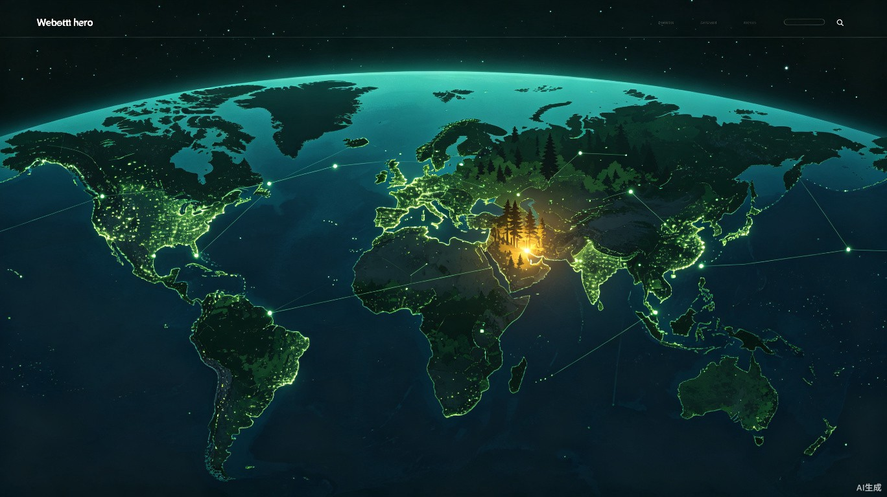

全球每天有数十个物种永远消失。大多数时候，我们甚至不知道它们曾经存在过。
卫星每天拍下地球的每一寸土地，AI已经能识别成千上万的物种——
但这些技术是分散的。我们想把它们连起来。
这一次，不是陨石撞击，不是冰川时代，而是因为我们。
* 数据来源：IUCN红色名录、IPBES全球评估报告
不是我们不想保护，而是很多时候我们根本不知道破坏正在发生。等发现的时候，已经太晚了。
卫星数据在航天局手里，观测数据在公民科学平台，物种数据在IUCN，保护区数据在各地林业局。各玩各的，互不连通。
栖息地破坏往往在几个月甚至几年后才被发现。森林砍完了、湿地填完了，物种已经没有家了，保护还怎么开展？
保护区面积大、人员少，不可能巡护到每一个角落。大量破坏发生在人迹罕至的地方，永远不会被发现。
在哪里建保护区最有效？有限的保护资金应该投给谁？很多时候靠的是经验和运气，而不是数据。
我们不追求"找到全球每一只动物"——这做不到，也没必要。
真正有效的保护逻辑是：监测栖息地的变化 → 推断物种的生存状态 → 在种群崩溃前发出预警。
家没了，动物必然消失；家还在，就还有希望。
接入哨兵2号、Landsat等公开卫星数据，用AI自动识别森林砍伐、湿地干涸、岸线开发、河道变迁等栖息地破坏。对濒危物种的关键栖息地做持续监测，一旦出现异常立刻预警。
整合iNaturalist、eBird等公民科学平台的观测数据，用AI校验可信度，生成物种分布范围的变化趋势——让你一眼看到"这个物种的家在过去10年缩小了多少"。
针对候鸟和海洋巡游生物，整合追踪器数据，用AI预测迁徙路径，标出途经的危险区域（风电场、污染海域、捕猎高发区），告诉保护者"在哪里布防最有效"。
每个濒危物种一张"数字名片"——种群数量趋势、栖息地变化曲线、主要威胁来源。用数据可视化让抽象的"濒危"变成看得见的速度和温度。
我们用三个代表性物种，覆盖陆地、迁徙、淡水三大场景，来展示HabitatEye能做什么。
东北虎的栖息地正在被道路、农田和人工林一点点切割、蚕食。但因为林区广袤、人迹罕至，很多非法砍伐活动在发生后很久才被发现——甚至永远不会被发现。
HabitatEye能做什么：对东北虎豹国家公园及周边的关键栖息地划定监测区域，每周比对卫星影像。AI一旦检测到新的森林砍伐痕迹，立刻向保护区发出预警，标注具体位置和破坏面积。保护人员不用再盲目巡护，直接精准出击。
从"发现时已经砍完了" → "几天内发现并制止"勺嘴鹬每年从俄罗斯远东飞到东南亚越冬，途中要在中国黄渤海的滩涂停下来补充能量。但这些中途停歇地正在被围海造田一点点吞噬——鸟儿飞着飞着，就找不到落脚的地方了。
HabitatEye能做什么：整合环志和卫星追踪数据，画出勺嘴鹬的完整迁徙路线。监测每一个关键停歇地的滩涂变化，预测每年的迁徙时间窗口，提醒当地保护组织提前做好准备。保护的不只是一个物种，而是一条生命之路。
从"不知道它们经过哪里" → "每一站都有人守护"长江是世界上最繁忙的河流之一。白鱀豚已经永远离开了我们，被宣布功能性灭绝——这是第一个因人类活动而灭绝的鲸类。现在长江江豚也在步其后尘：航运、污染、过度捕捞、水利工程，它们的家园正在一点点消失。
HabitatEye能做什么：监测长江流域的栖息地变化——岸线开发、沙洲演变、湿地缩减，结合水文数据和江豚出现记录，AI预测江豚的核心栖息地和迁移通道。标记高风险区域，为禁渔区、保护区的划定和调整提供数据支持。
从"白鱀豚的悲剧" → "别让江豚成为下一个"我们不需要从零发明任何东西。卫星是现成的，AI模型是开源的，数据是公开的——我们只需要把它们拧成一股绳，变成保护工作者能用的工具。
哨兵2号、Landsat等公开卫星数据，10-30米分辨率，5天重访周期，免费获取。
语义分割模型自动识别森林砍伐、湿地退化、岸线开发、河道变迁等变化，准确率达90%+。
基于iNaturalist数千万条观测数据训练的物种识别模型，覆盖数万种动植物。
交互式地图展示全球物种分布、栖息地变化、预警事件，支持下钻到具体区域。
这不是给普通人刷的App，而是给真正在一线做保护的人用的工具。
宏观监测
政策制定
日常巡护
破坏预警
项目选址
成效评估
大尺度研究
数据分析
物种灭绝最大的悲剧不是消失本身，而是人类甚至不知道它们曾经存在过。HabitatEye让每一片栖息地的破坏都能被及时发现，让每一个濒危物种都有被拯救的机会。这不止是一个软件，更是人类用技术弥补对自然造成伤害的一种方式。
保护区人手不足、保护资金有限——这是现实。HabitatEye用AI自动扫描可疑区域、自动排序保护优先级，让保护人员不用再盲目巡护，把最宝贵的人力和资金投到最需要的地方。
这个想法也许很天真。但历史上很多真正有价值的事情，最开始都是从"有人觉得不能再这样下去了"开始的。
比赛的意义不只是拿奖，更是让更多人看到这个问题，加入到这件事情里来。